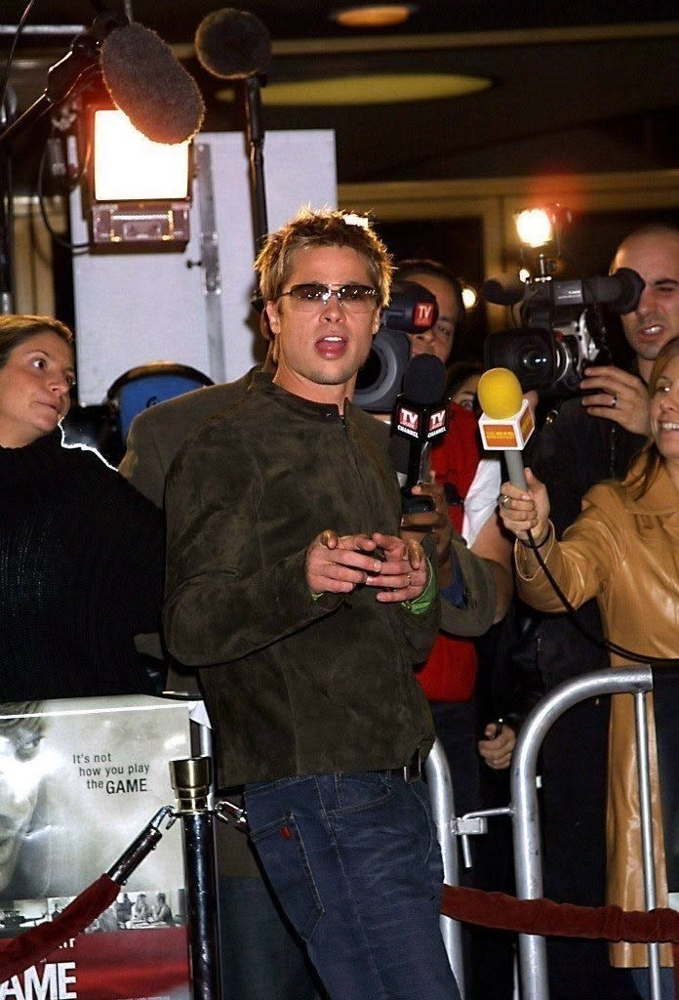

Quand les acteurs et artistes dictent tout
Hier, les créateurs faisaient la mode et les stars la portaient. Aujourd'hui, l'ordre s'est inversé. Acteurs, chanteurs et sportifs sont devenus les véritables maîtres du goût. Et ce basculement raconte l'économie la plus puissante de notre siècle : celle de l'attention.

Le renversement du pouvoir
Pendant longtemps, le créateur était roi : il imposait ses collections et le monde suivait. Son nom sur une étiquette suffisait à faire la loi. Mais l'influence a changé de mains. Ce n'est plus le podium qui décide, c'est le tapis rouge, le clip, le terrain. Une tenue portée par la bonne personne pèse plus qu'un défilé entier.
La raison est simple : les stars ont ce que les maisons cherchent désespérément, l'attention. Des millions de regards suivent chacun de leurs gestes, chacune de leurs apparitions. Les habiller, c'est s'offrir une visibilité qu'aucune campagne, aussi coûteuse soit-elle, ne pourra jamais acheter.
Ce n'est plus la marque qui donne du prestige à la star, c'est la star qui donne du prestige à la marque. Le rapport de force s'est totalement inversé, et les maisons les plus prestigieuses font désormais la queue pour habiller ceux qui, hier, les suppliaient.
De l'égérie au décideur
On ne se contente plus de prêter une robe le temps d'une soirée : on nomme des directeurs artistiques venus de la musique, on crée des collections entières autour d'un nom, on confie les clés de maisons centenaires à des célébrités. La célébrité n'est plus un visage, elle est devenue une signature.
Ce glissement change tout. Être connu ne suffit plus à être une égérie : désormais, la notoriété donne le droit de créer, de diriger, de décider. Le talent et la gloire, longtemps séparés, se confondent de plus en plus.
Le goût contre l'expertise
Ce basculement inquiète une partie du milieu. Les maisons cherchent-elles encore des créateurs, ou seulement des aimants à projecteurs ? Le risque est réel de voir la notoriété l'emporter sur le métier, le buzz sur la vision, le nombre d'abonnés sur le talent.
Mais il y a un autre regard possible. Beaucoup de ces artistes ont un vrai sens du style, une culture de l'image forgée par leur métier. Ils ne volent pas la place des créateurs : ils rappellent que la mode a toujours été une affaire de personnalité. Le charisme, après tout, est aussi un savoir-faire — plus rare et plus difficile à enseigner que la coupe.
La vérité est sans doute entre les deux. Certaines collaborations sont de purs coups marketing, vides et oubliables ; d'autres révèlent de vrais créateurs qui s'ignoraient. Le nom ne fait pas le talent, mais il ne l'exclut pas non plus.
Une industrie qui court après la lumière
Les maisons courent désormais après la moindre étincelle de buzz. Chaque apparition devient une opération, chaque amitié une collaboration potentielle, chaque relation un contrat. La mode ne crée plus seulement le désir, elle le poursuit.
Ce jeu a ses dangers. À trop miser sur la célébrité, on risque d'oublier ce qui fait une grande maison : une vision, une cohérence, une âme. Une marque qui ne vit que de visages empruntés finit par ne plus avoir de visage du tout.
Le public, juge de tout
Au fond, ce pouvoir des stars n'est que le reflet du nôtre. Si elles dictent tout, c'est parce qu'on les regarde. Ce ne sont pas les célébrités qui décident de la mode, c'est l'attention qu'on leur donne.
Le jour où nous regarderons ailleurs, leur pouvoir s'éteindra. C'est la grande fragilité de cette économie : elle repose entièrement sur un regard volatil, capricieux, qui peut se détourner en un instant. Les rois de l'attention règnent tant qu'on veut bien les voir — et pas une seconde de plus.
Avant, la mode habillait les stars. Aujourd'hui, ce sont les stars qui habillent la mode.